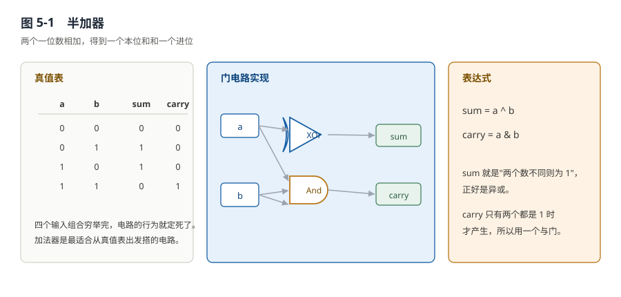
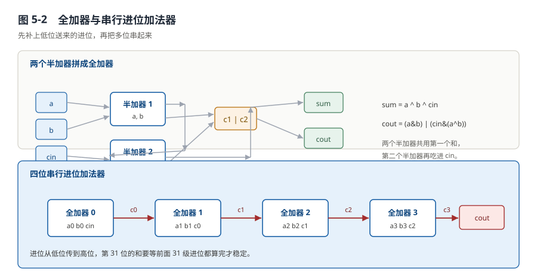
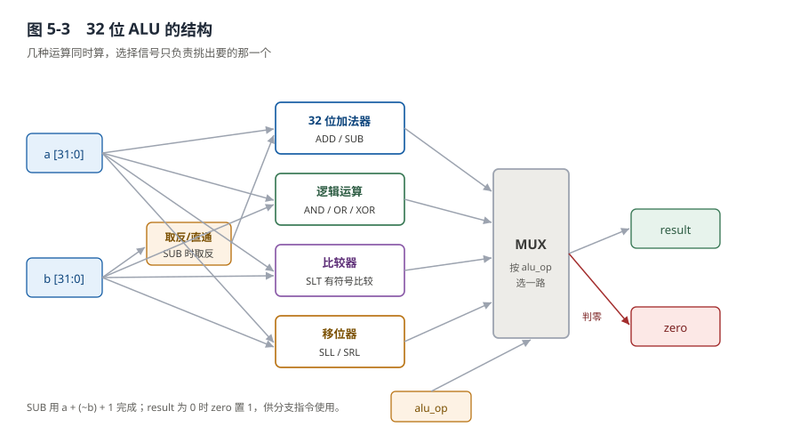
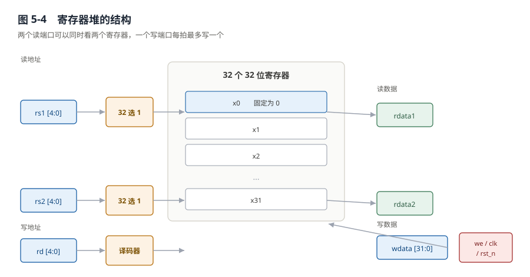
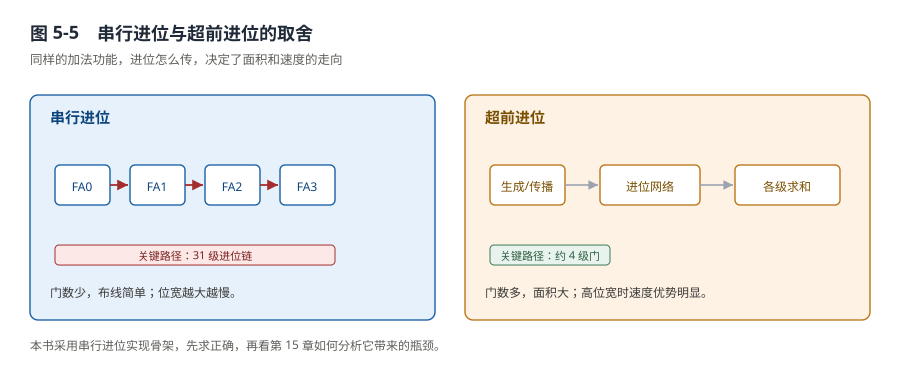

第 5 章 从真值表到运算电路
本章导读 上一章我们学会了从真值表写出逻辑表达式。这一章把这条路走到底：从一位加法器搭到 32 位加法器，再加上逻辑运算、比较和移位，拼出处理器里真正干活的 ALU。最后搭一个 32 个寄存器的寄存器堆，让指令有地方存中间结果。
这一章第一次用到 Verilog 的层次化写法：一个小模块拼进大模块，大模块再被更大的模块调用。代码按同样的顺序长出来，先解决”加一位”，再解决”加一串”，最后才面对”选哪一种运算”。
实验文件在
code/digital/和code/verilog/05_arith/。学完本章，你应该能够： 1. 从真值表写出半加器和全加器的表达式，并解释进位怎么传； 2. 说明补码减法为什么能用加法器完成； 3. 读懂 ALU 的代码，说清每个操作码对应哪一路结果； 4. 解释寄存器堆为什么有两个读端口和一个写端口，为什么
x0写不进去。
5.1 从真值表到半加器
把两个一位二进制数相加，结果有两位：本位和 sum，进位 carry。输入只有四种组合，可以直接列出来。
| a | b | sum | carry |
|---|---|---|---|
| 0 | 0 | 0 | 0 |
| 0 | 1 | 1 | 0 |
| 1 | 0 | 1 | 0 |
| 1 | 1 | 0 | 1 |
sum 在 a 和 b 不同时为 1，这正是异或；carry 只在两者都为 1 时为 1，这是与。于是表达式和电路都定下来了：
sum = a ^ b
carry = a & b这就是半加器。它只处理两个加数，不管低位有没有送来的进位，所以叫”半”。

图 5-1 半加器的真值表、门电路与表达式。
在 Digital 里打开 code/digital/05_half_adder.dig，拨动 a 和 b，核对四个组合。用门电路看真值表，和第 4 章用门电路核对与门的真值表是同一件事，只是这次输出有两个。
补上低位送来的进位
多位加法里，第 i 位除了 a 和 b，还要接收第 i-1 位传来的进位 cin。输入变成三个，真值表有八行。可以用两个半加器搭出来：第一个先把 a 和 b 加起来，得到中间和 s1 与中间进位 c1；第二个把 s1 和 cin 加起来，得到真正的 sum 与另一个进位 c2。总的进位是 c1 | c2。
s1 = a ^ b
c1 = a & b
sum = s1 ^ cin
c2 = s1 & cin
cout = c1 | c2这个结构叫全加器。它没有新的数学，只是把两次半加串起来，把两个可能的进位合并。

图 5-2 两个半加器拼成全加器，再把全加器串成多位加法器。
5.2 32 位加法器
把 32 个全加器排成一列，低位算出的 cout 接高位的 cin，最低位的 cin 接外部输入，最高位的 cout 当作溢出进位输出。这叫串行进位加法器，也叫行波进位加法器。代码在 code/verilog/05_arith/，先看半加器和全加器。
module half_adder (
input wire a,
input wire b,
output wire sum,
output wire carry
);
assign sum = a ^ b;
assign carry = a & b;
endmodule半加器两个输出都是组合逻辑，用 assign 直接写表达式。没有时钟，没有状态，输入一变输出就变。
全加器调用两次半加器。这里的写法需要注意：实例名不能省，端口用 .名字(信号) 的形式一一对应，顺序可以打乱。
module full_adder (
input wire a,
input wire b,
input wire cin,
output wire sum,
output wire cout
);
wire s1;
wire c1;
wire c2;
half_adder u_h0 (
.a (a),
.b (b),
.sum (s1),
.carry (c1)
);
half_adder u_h1 (
.a (s1),
.b (cin),
.sum (sum),
.carry (c2)
);
assign cout = c1 | c2;
endmodules1、c1、c2 是内部连线，用 wire 声明。第一个半加器吃 a 和 b，第二个吃 s1 和 cin。最后那个或门把两条进位路径合起来。这段代码和上一节的推导逐句对应，读代码时可以直接在脑子里画出门电路。
把 32 个全加器串起来
如果手写 32 次实例化，代码冗长且容易写错下标。Verilog 提供 generate 加 for 循环，可以在电路展开阶段生成 32 份实例。注意这不是软件里的循环执行，硬件里真的有 32 个全加器同时存在。
module adder_32 (
input wire [31:0] a,
input wire [31:0] b,
input wire cin,
output wire [31:0] sum,
output wire cout
);
wire [31:0] carry;
genvar i;
generate
for (i = 0; i < 32; i = i + 1) begin : g_bit
if (i == 0) begin : g_first
full_adder u_fa (
.a (a[0]),
.b (b[0]),
.cin (cin),
.sum (sum[0]),
.cout (carry[0])
);
end else begin : g_rest
full_adder u_fa (
.a (a[i]),
.b (b[i]),
.cin (carry[i-1]),
.sum (sum[i]),
.cout (carry[i])
);
end
end
endgenerate
assign cout = carry[31];
endmodule最低位没有”第 -1 位的进位”，所以单独写一份，其余 31 位统一接 carry[i-1]。carry 是 32 位内部连线，第 i 位全加器的输出接第 i+1 位的输入。
为什么 carry 要声明成 [31:0] 而不是 [30:0]？因为最高位的进位输出也要有地方放，最后 assign cout = carry[31]; 把它引出模块。少一位的话，仿真器会报出未连接的线。
5.3 用加法器做减法
补码的好处在这里体现出来。n 位补码里，-b 等于 ~b + 1。于是
a - b = a + (~b) + 1只要在做减法时把 b 取反，并把最低位的进位设为 1，原来的加法器就能算减法，不需要另做一套电路。这个 ~b 加 1 的操作叫求补，前面的 取反/直通 小模块就是干这个的。
在 Verilog 里写成两行：
assign b_operand = (alu_op == ALU_SUB) ? ~b : b;
assign carry_in = (alu_op == ALU_SUB) ? 1'b1 : 1'b0;加法器永远在那里算 a + b_operand + carry_in。做加法时 b_operand=b、carry_in=0，做减法时 b_operand=~b、carry_in=1。一个加法器兼顾两种运算，这是补码表示送的礼物。
溢出进位 cout 在加减法里另有含义：无符号加法时它表示结果超出 32 位，无符号减法时它是借位的反。本书的简化核不使用它，只在第 11 章讲异常时顺带提到。
5.4 ALU 的接口与实现
ALU 是处理器的运算中心。先把接口想清楚：两个 32 位操作数进来，一个操作码进来，一个 32 位结果出去。这是最初的版本。
module alu (
input wire [31:0] a,
input wire [31:0] b,
input wire [3:0] alu_op,
output reg [31:0] result
);先只支持加法，把上一节做好的加法器接进来，组合逻辑里直接把结果送出去：
adder_32 u_adder (
.a(a), .b(b), .cin(1'b0),
.sum(result), .cout(add_cout)
);这样只能算加法。要支持减法，就得引入上一节的 b_operand 和 carry_in；要把 result 从连线变成可在 case 里赋值的寄存器，端口声明也要改成 output reg。接着把逻辑运算加进来，代码变成一组分支：
always @(*) begin
case (alu_op)
ALU_ADD: result = add_result;
ALU_SUB: result = add_result;
ALU_AND: result = a & b;
ALU_OR: result = a | b;
ALU_XOR: result = a ^ b;
endcase
endalways @(*) 表示这是组合逻辑，敏感列表由工具自动推断。加法器的输出 add_result 一直在算，不管当前选的是不是加减法；case 只负责挑一路送出去。硬件里这对应图 5-3 那个大 MUX。
再补两种运算。有符号比较 SLT 不能直接拿 a < b 判断，因为 Verilog 里两个 32 位向量默认按无符号数比。正确做法是先比符号位：符号不同时负数更小，符号相同时才是数值比较。移位量取自 b 的低 5 位，因为 32 位数据最多移 31 位。
ALU_SLT: result = (a[31] != b[31]) ? {31'b0, a[31]} : {31'b0, (a < b)};
ALU_SLL: result = a << b[4:0];
ALU_SRL: result = a >> b[4:0];分支指令 beq 和 bne 要判断两个操作数是否相等。与其在 ALU 外面另接比较器，不如让 ALU 算减法 a-b，结果为 0 就说明相等。于是接口再加一个输出 zero：
output wire zero assign zero = (result == 32'b0);接口到这里定稿。下面是完整代码，与 code/verilog/05_arith/alu.v 逐字相同。
module alu (
input wire [31:0] a,
input wire [31:0] b,
input wire [3:0] alu_op,
output reg [31:0] result,
output wire zero
);
localparam ALU_ADD = 4'd0;
localparam ALU_SUB = 4'd1;
localparam ALU_AND = 4'd2;
localparam ALU_OR = 4'd3;
localparam ALU_XOR = 4'd4;
localparam ALU_SLT = 4'd5;
localparam ALU_SLL = 4'd6;
localparam ALU_SRL = 4'd7;
wire [31:0] b_operand;
wire carry_in;
wire [31:0] add_result;
wire add_cout;
assign b_operand = (alu_op == ALU_SUB) ? ~b : b;
assign carry_in = (alu_op == ALU_SUB) ? 1'b1 : 1'b0;
adder_32 u_adder (
.a (a),
.b (b_operand),
.cin (carry_in),
.sum (add_result),
.cout (add_cout)
);
always @(*) begin
case (alu_op)
ALU_ADD: result = add_result;
ALU_SUB: result = add_result;
ALU_AND: result = a & b;
ALU_OR: result = a | b;
ALU_XOR: result = a ^ b;
ALU_SLT: result = (a[31] != b[31]) ? {31'b0, a[31]} : {31'b0, (a < b)};
ALU_SLL: result = a << b[4:0];
ALU_SRL: result = a >> b[4:0];
default: result = 32'b0;
endcase
end
assign zero = (result == 32'b0);
endmodule操作码
八种运算对应四位操作码，编码是本模块自己的约定，和指令里的 funct3 还隔着一层译码。第 8 章写一个译码模块，把指令字段翻译成这里的 alu_op。
| 编码 | 运算 | 说明 |
|---|---|---|
| 0 | ADD | a + b |
| 1 | SUB | a - b，也用于相等比较 |
| 2 | AND | 按位与 |
| 3 | OR | 按位或 |
| 4 | XOR | 按位异或 |
| 5 | SLT | 有符号比较，a < b 时输出 1 |
| 6 | SLL | 逻辑左移，移位量取 b[4:0] |
| 7 | SRL | 逻辑右移，移位量取 b[4:0] |
完整的 RV32I 还需要 SLTU、SRA，M 扩展还要乘除法。这里先做八种，把数据通路搭通；缺的运算以后按同样的模式往 case 里加一行即可。

图 5-3 各类运算并行计算，由操作码选出一路作为结果。
测试台 tb_alu.v 覆盖八种运算和零标志，共 15 项检查。其中 SUB 3-10 wraps around 检查补码下的借位，SLT 用正负组合确认有符号比较没有走错成无符号比较。
5.5 寄存器堆
ALU 算完的结果要存起来，下一条指令才能接着用。RV32I 有 32 个通用寄存器，每个 32 位。硬件上就是一个小型存储阵列，加上读写端口。
先看需求。一条典型指令要读两个源寄存器，比如 add x3, x1, x2 同时读 x1 和 x2；结果只写一个目的寄存器。所以接口需要两个读地址 rs1、rs2，两个读数据 rdata1、rdata2，一个写地址 rd，一个写数据 wdata，再加写使能 we。
input wire [4:0] rs1,
input wire [4:0] rs2,
input wire [4:0] rd,
input wire we,
input wire [31:0] wdata,
output wire [31:0] rdata1,
output wire [31:0] rdata25 位地址正好寻址 32 个寄存器。还有三个控制信号：时钟 clk、低有效复位 rst_n，以及写使能 we。为什么没有读使能？因为读是组合的：地址一给，输出就出来，不需要等时钟沿。写则是同步的：只有在时钟沿且 we=1 时才真正写进去。

图 5-4 两个读地址各驱动一个 32 选 1 多路选择器，写地址经译码后产生写使能。
完整代码在 code/verilog/05_arith/regfile.v。
module regfile (
input wire clk,
input wire rst_n,
input wire [4:0] rs1,
input wire [4:0] rs2,
input wire [4:0] rd,
input wire we,
input wire [31:0] wdata,
output wire [31:0] rdata1,
output wire [31:0] rdata2
);
reg [31:0] regs [0:31];
integer i;
always @(posedge clk) begin
if (!rst_n) begin
for (i = 0; i < 32; i = i + 1)
regs[i] <= 32'b0;
end else if (we && (rd != 5'd0)) begin
regs[rd] <= wdata;
end
end
assign rdata1 = (rs1 == 5'd0) ? 32'b0 : regs[rs1];
assign rdata2 = (rs2 == 5'd0) ? 32'b0 : regs[rs2];
endmodule有四处需要说明。
reg [31:0] regs [0:31]; 声明了一个 32 行、每行 32 位的存储阵列。regs[0] 到 regs[31] 对应 x0 到 x31。
复位时用 for 循环把 32 个寄存器全部清 0。这个 for 写在一个 always 块里，会被展开成 32 个并行的赋值，不是按顺序一个一个清。这里用了非阻塞赋值 <=，保持时序逻辑的写法一致。
rd != 5'd0 这一句把 x0 固定成 0。规范规定 x0 永远读出 0，向它写入应当被忽略。与其专门留一个寄存器再想办法拦住写入，不如在写判断里直接排除，读的时候也直接返回 0。
读端口用 assign 连续取值，相当于两个 32 选 1 的多路选择器。两个读地址相同时，两个端口读出同样的值，互不干扰。
测试台 tb_regfile.v 有 7 项检查，覆盖复位清零、写后读、两个端口同时读同一寄存器、写 x0 被忽略、写使能无效时保持原值。这里有个值得记住的细节：改完 rs1 之后要等 1 ns 再检查 rdata1。组合逻辑的 assign 更新需要一个很小的时间，写在同一时刻检查会读到旧值。
5.6 重点与权衡
从真值表出发是可靠的路子。 一位加法器的真值表只有四行，八行的全加器也能手工列完。电路复杂到几十个输入时，才需要交给综合工具。
层次化让复杂度可控。 半加器拼全加器，全加器拼 32 位加法器，加法器再作为 ALU 的一个部件。每一层只关心输入输出，不必重新理解下面一层的门电路。
串行进位省面积，超前进位省时间。 图 5-5 对比了两种做法。本书用串行进位，代码短、容易看懂；但它让加法成为一条长关键路径，高频设计里通常要换成超前进位或更快的进位结构。

图 5-5 串行进位逐级传递，超前进位提前算出各级进位。
补码让加减法共用一套硬件。 减法只多了取反和末位加 1，代价是几个门，换来的是一个统一的加法通路。
寄存器堆读写不对称。 读是组合的，写是同步的；两个读端口对应一条指令的两个源操作数，一个写端口对应一个目的操作数。x0 用电路直接固定为 0。
5.7 实验
实验一 半加器
打开 code/digital/05_half_adder.dig，把 a、b 拨成四种组合，记录 sum 和 carry。然后对照 half_adder.v，确认 assign sum = a ^ b; 和 assign carry = a & b; 与门电路一致。
实验二 一位 ALU 切片
打开 code/digital/05_alu_bit.dig。op=0 时输出 a^b，op=1 时输出 a&b。拨几组 a、b，确认切换 op 时输出跟着换。这个电路就是图 5-3 那个大 MUX 的一位版本。
实验三 跑 Verilog 测试台
在 code/verilog/05_arith/ 下分别执行：
iverilog -g2012 -o sim_alu.out half_adder.v full_adder.v adder_32.v alu.v tb_alu.v
vvp sim_alu.out
iverilog -g2012 -o sim_reg.out regfile.v tb_regfile.v
vvp sim_reg.outALU 应有 15 项通过，寄存器堆应有 7 项通过，最后都打印 ALL TESTS PASSED。
做完可以试两个小改动。把 alu.v 里 SLT 的有符号判断换成直接的 a < b，看看哪个检查会失败；把 regfile.v 里的 rd != 5'd0 去掉，看看写 x0 的检查会怎样。这两个改动都很小，却能验证你是否真的看懂了这两处用意。
5.8 本章小结
- 半加器由异或门和与门组成，输出本位和与进位。
- 两个半加器串起来得到全加器，它能处理低位送来的进位。
- 32 个全加器串成串行进位加法器，进位逐级传递，关键路径较长。
- 补码减法可以写成
a + (~b) + 1，和加法共用同一套电路。 - ALU 让多种运算并行计算，用操作码控制的多路选择器挑出结果；零标志供分支指令使用。
- 有符号比较要先看符号位，移位量取操作数低 5 位。
- 寄存器堆有两个组合读端口和一个同步写端口，x0 读出恒为 0，写入被忽略。
思考题
- 用真值表验证全加器的
cout = (a&b) | (cin&(a^b))，确认八种输入组合都成立。 - 串行进位加法器的 32 位版本，从最低位
cin到最高位sum[31]大致经过多少级门？把这个数字和时钟周期联系起来，说明它为什么限制主频。 - 在 4 位补码里计算
3 - 5，写出~b + 1的过程，确认结果表示 -2。 alu.v里add_cout声明后没有使用。综合工具会怎么处理它？如果无符号加法需要检测溢出，应该接哪个信号？- 寄存器堆的两个读端口如果同时读 x0 和 x5，输出分别是什么？如果往 x0 写数据再立刻读，会发生什么？
- 本章的 ALU 没有 SLTU（无符号比较）。参照 SLT 的写法，给出它在
case里应该增加的表达式。 tb_regfile.v里改完rs1后为什么要插入#1？把这一行删掉再跑一次，看看结果是否变化，并解释原因。
下一章：第 6 章 用 Python 写模拟器：取指与译码。先用软件搭出一个 RV32I 的内存、寄存器和 PC，把指令字段逐位拆开。